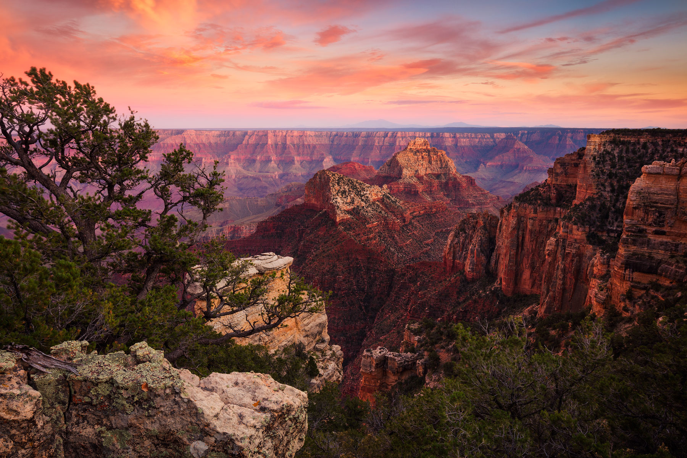

About the Park
The Grand Canyon is one of the most visited natural wonders in the world, carved over millions of years by the Colorado River in northern Arizona. The canyon stretches 277 miles long, up to 18 miles wide, and over a mile deep.

Things To Do
- Hiking
- Bright Angel Trail
- South Kaibab Trail
- Rim Trail
- River Activities
- Whitewater rafting on the Colorado
- Multi day river trips
- Kayaking the inner canyon
- Sightseeing
- Grand Canyon Skywalk
- Ranger programs at the South Rim
- Stargazing events in the evening
Best Hikes
Bright Angel Trail is the most popular trail in the park, descending 9.5 miles to the Colorado River. It is steep and strenuous so bring plenty of water and turn back before you get too tired.
South Kaibab Trail offers the best panoramic views of any trail in the park with zero shade, so it is best hiked early morning in cooler months.
Rim Trail is an easy mostly flat 13 mile walk along the South Rim with incredible canyon views the entire way, perfect for all fitness levels.